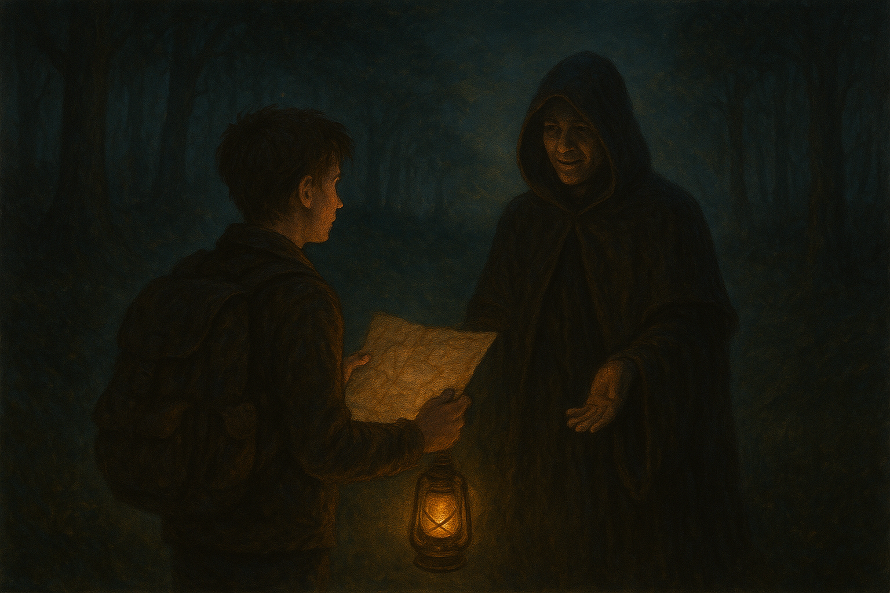

Te lleva a un claro donde el aire parece más liviano. Te cuenta que él también fue un explorador perdido… y logró hacer las paces con “El Eco”. Te advierte de una última prueba.
Si seguiste al encapuchado, te lleva a un altar de piedra. Te dice que solo puedes salir si completas un antiguo ritual, pero debes elegir cómo:
Opción A: Enciendes las antorchas alrededor del altar siguiendo su orden.
Opción B: Colocas tu mano sobre la piedra central y repites sus palabras.